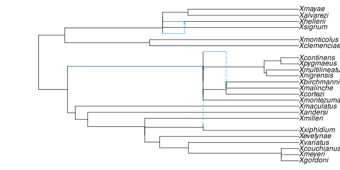
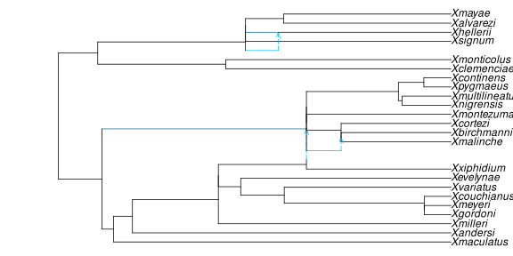
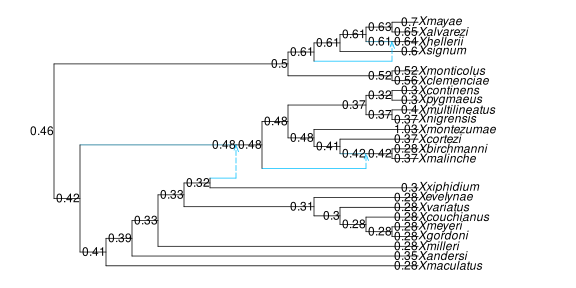
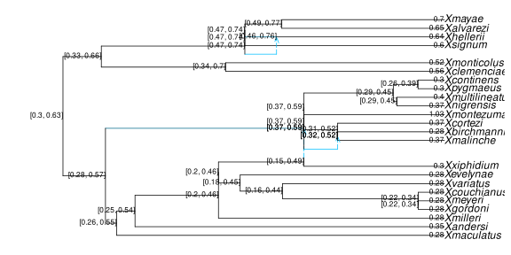
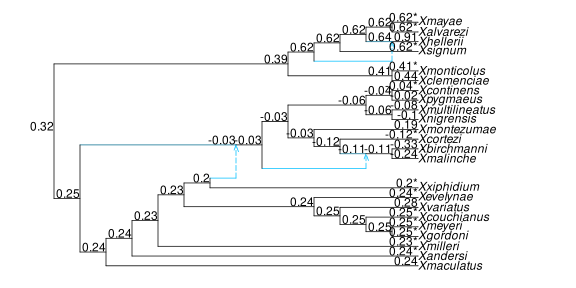
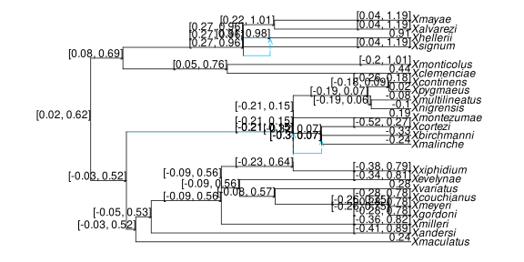
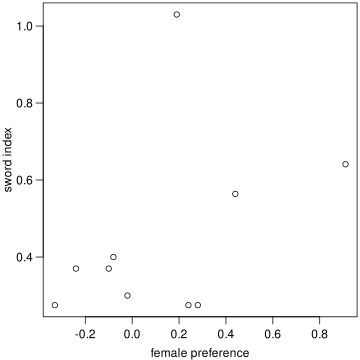

Empirical example: Xiphophorus fishes
We reproduce here the analyses on Xiphophorus fishes from Bastide et al. (2018), available on dryad.
Data loading
The data can be downloaded here:
- the time calibrated network;
- the trait data on sword index and female preference for a sword, originally from Cui et al. (2013).
The files are also in the examples folder of the PhyloTraits package as xiphophorus_networks_calibrated.tre and xiphophorus_morphology_Cui_etal_2013.csv.
If not done already, load the packages needed for this analysis:
using PhyloNetworks, PhyloTraits, PhyloPlots
using RCall, CSV, DataFrames
using StatsAPI, StatsBase, StatsModelsthen read in the networks data:
examples_path = joinpath(dirname(pathof(PhyloTraits)), "..", "examples");
topologies = readmultinewick(joinpath(examples_path, "xiphophorus_networks_calibrated.tre"));
net3 = topologies[3]; # we will use the network with 3 reticulations
plot(net3; useedgelength=true); # topology + branch lengths
The file examples/xiphophorus_networks_calibrated.tre contains three calibrated networks, with 0, 1 or 3 reticulations (see Bastide et al. (2018) for details). In this tutorial, we use the network with 3 reticulations.
We can rotate! some of the nodes to avoid crossing edges and produce a better figure:
rotate!(net3, -4)
rotate!(net3, -5)
rotate!(net3, -6)
rotate!(net3, -14)
rotate!(net3, -16)
rotate!(net3, -17)
plot(net3; useedgelength=true); # topology + branch lengths
We can then read in the trait data:
csvfile = joinpath(examples_path, "xiphophorus_morphology_Cui_etal_2013.csv")
dat = CSV.read(csvfile, DataFrame);| Row | tipnames | sword_index | preference |
|---|---|---|---|
| String15 | Float64 | Float64? | |
| 1 | Xalvarezi | 0.65 | missing |
| 2 | Xandersi | 0.35 | missing |
| 3 | Xbirchmanni | 0.275 | -0.33 |
| 4 | Xclemenciae | 0.564 | 0.44 |
| 5 | Xcontinens | 0.3 | missing |
| 6 | Xcortezi | 0.37 | missing |
| 7 | Xcouchianus | 0.275 | missing |
| 8 | Xevelynae | 0.275 | missing |
| 9 | Xgordoni | 0.275 | missing |
| 10 | Xhellerii | 0.641 | 0.91 |
| 11 | Xmaculatus | 0.275 | 0.24 |
| 12 | Xmalinche | 0.37 | -0.24 |
| 13 | Xmayae | 0.7 | missing |
| 14 | Xmeyeri | 0.275 | missing |
| 15 | Xmilleri | 0.275 | missing |
| 16 | Xmontezumae | 1.03 | 0.19 |
| 17 | Xmonticolus | 0.517 | missing |
| 18 | Xmultilineatus | 0.4 | -0.08 |
| 19 | Xnezahualcoyotl | 0.48 | missing |
| 20 | Xnigrensis | 0.37 | -0.1 |
| 21 | Xpygmaeus | 0.3 | -0.02 |
| 22 | Xsignum | 0.6 | missing |
| 23 | Xvariatus | 0.275 | 0.28 |
| 24 | Xxiphidium | 0.3 | missing |
Sometimes the trait data and phylogeny have non-overlapping taxa sets. PhyloTraits requires the data and phylogeny to have information on the same set of taxa. We will delete the rows in the trait data for the taxa that are missing in the network.
julia> taxa_net = tiplabels(net3); # extract list of taxajulia> missing_rows = Integer[];julia> for i in reverse(1:nrow(dat)) j = findfirst(isequal(dat.tipnames[i]), taxa_net) if isnothing(j) # taxon not found in network println("taxon ", dat.tipnames[i], " (row $i) not found in network") push!(missing_rows,i) end endtaxon Xnezahualcoyotl (row 19) not found in networkjulia> dat = dat[setdiff(1:nrow(dat),missing_rows),:];
The snippet above should work fairly generically, assuming that the column with the taxa is labelled tipnames. Here, it tells us that taxon Xnezahualcoyotl (row 19) not found in network and thus our code (last line) removed it from our data frame dat.
Ancestral state prediction
As done in the manual, after fitting a model of trait evolution, we may wish to estimate the character at various internal nodes to gain insight on the ancestral states.
For the ancestral states of the sword index:
dat_si = dat[:, [:tipnames,:sword_index]];
AS_si = ancestralreconstruction(dat_si, net3); # the ancestral state estimates
plot(net3, nodelabel = predict(AS_si, text=true), xlim=[0,20]);┌ Warning: These prediction intervals show uncertainty in ancestral values,
│ assuming that the estimated variance rate of evolution is correct.
│ Additional uncertainty in the estimation of this variance rate is
│ ignored, so prediction intervals should be larger.
└ @ PhyloTraits ~/work/PhyloTraits.jl/PhyloTraits.jl/src/ancestral_continuous.jl:312
The prediction intervals ignore the fact that we estimated the process parameters, so they are less accurate and the function throws a warning. This warning will only show once in a given julia session.
To get the 90% credible interval in a text format to use as labels for plotting, we can use option text=true in the predict function.
AS_si_int = predict(AS_si, interval=:prediction, level=0.90, text=true);
plot(net3, nodelabel=AS_si_int[!,[:nodenumber,:interval]], useedgelength=true);
Note that here, the first plot ignores branch lengths, while the second one uses them (useedgelength=true).
As a consistency check, we can observe that the ancestral state prediction interval falls within the extrema of the trait itself:
julia> AS_si_int[findfirst(AS_si_int.nodenumber .== -2),:interval]"[0.3, 0.63]"julia> extrema(dat[:,:sword_index])(0.275, 1.03)
We can do the same for the female preference for a sword:
dat_fp = dat[:, [:preference, :tipnames]];
AS_fp = ancestralreconstruction(dat_fp, net3);
plot(net3, nodelabel=predict(AS_fp,text=true), xlim=[0,20]);
AS_fp_int = predict(AS_fp,interval=:prediction,level=0.90,text=true);
plot(net3, nodelabel=AS_fp_int[!,[:nodenumber,:interval]],
useedgelength=true, xlim=[-3,26]);
julia> AS_fp_int[findfirst(AS_fp_int.nodenumber .== -2),:interval]"[0.02, 0.62]"julia> extrema(skipmissing(dat[:,:preference]))(-0.33, 0.91)
Phylogenetic signal: Pagel's lambda
We can use Pagel's lambda transformation to asses the phylogenetic sigal.
julia> lambda_si = phylolm(@formula(sword_index ~ 1), dat, net3, model="lambda")┌ Warning: The network is not time consistent (node heights are not well-defined). │ The network should be calibrated for this analysis, as the theory for Pagel's model │ assumes a time-consistent network. │ The analysis will use node heights based on the major tree, in the meantime. └ @ PhyloTraits ~/work/PhyloTraits.jl/PhyloTraits.jl/src/fit_phylolm_continuous.jl:104 [ Info: Maximum lambda value to maintain positive branch lengths: 1.07157 PhyloNetworkLinearModel Formula: sword_index ~ 1 Model: Pagel's lambda Parameter Estimates, using REML: phylogenetic variance rate: 0.00321484 Lambda: 1.07157 Coefficients: ─────────────────────────────────────────────────────────────────────── Coef. Std. Error t Pr(>|t|) Lower 95% Upper 95% ─────────────────────────────────────────────────────────────────────── (Intercept) 0.465531 0.103858 4.48 0.0002 0.250142 0.680919 ─────────────────────────────────────────────────────────────────────── Log Likelihood: 13.3199544676 AIC: -20.6399089351julia> lambda_fp = phylolm(@formula(preference ~ 1), dat, net3, model="lambda"; suppresswarnings=true)[ Info: Maximum lambda value to maintain positive branch lengths: 1.07157 PhyloNetworkLinearModel Formula: preference ~ 1 Model: Pagel's lambda Parameter Estimates, using REML: phylogenetic variance rate: 0.00662525 Lambda: 1.07157 Coefficients: ──────────────────────────────────────────────────────────────────────── Coef. Std. Error t Pr(>|t|) Lower 95% Upper 95% ──────────────────────────────────────────────────────────────────────── (Intercept) 0.327211 0.169062 1.94 0.0849 -0.0552334 0.709655 ──────────────────────────────────────────────────────────────────────── Log Likelihood: -0.6904893047 AIC: 7.3809786093
On both traits we observe λ>1.0 when fitting the Pagel's lambda model; consequently, we would interpret the patterns in trait data to have high phylogenetic signal. Note that here, we observe λ values greater than 1.0: the observed value is the maximum value so that the transformation does not produce negative branch lengths.
When fitting a Pagel's lambda model on a network that is not time consistent, a warning will appear and notify the user that the node heights from the major tree within the network will be used for analysis. Pagel's lambda models assume time consistency, making it important to calibrate a network prior to model fitting. In our case, if we run getnodeheights(net3) we will get an error showing that the different path lengths that lead to the time inconsistency is relatively small. The small difference between paths likely results in a minor difference when using the major tree node heights instead of well-calibrated heights.
julia> getnodeheights(net3)ERROR: the network is not time consistent. paths of different lengths: [10.997628573602418, 10.997629766245751]
Phylogenetic regression of sword index versus preference
Phylogenetic regression can help us anwser the question: does preference influence sword index?
R"plot"(dat.preference, dat.sword_index,
xlab="female preference", ylab="sword index");
julia> fit_BM = phylolm(@formula(sword_index ~ preference), dat, net3)PhyloNetworkLinearModel Formula: sword_index ~ 1 + preference Model: Brownian motion Parameter Estimates, using REML: phylogenetic variance rate: 0.00522392 Coefficients: ─────────────────────────────────────────────────────────────────────── Coef. Std. Error t Pr(>|t|) Lower 95% Upper 95% ─────────────────────────────────────────────────────────────────────── (Intercept) 0.29801 0.177351 1.68 0.1314 -0.110963 0.706982 preference 0.552722 0.303918 1.82 0.1065 -0.148114 1.25356 ─────────────────────────────────────────────────────────────────────── Log Likelihood: -0.2269154067 AIC: 6.4538308134julia> fit_λ = phylolm(@formula(sword_index ~ preference), dat, net3, model="lambda"; suppresswarnings=true)[ Info: Maximum lambda value to maintain positive branch lengths: 1.07157 PhyloNetworkLinearModel Formula: sword_index ~ 1 + preference Model: Pagel's lambda Parameter Estimates, using REML: phylogenetic variance rate: 0.00601073 Lambda: 1.07157 Coefficients: ─────────────────────────────────────────────────────────────────────── Coef. Std. Error t Pr(>|t|) Lower 95% Upper 95% ─────────────────────────────────────────────────────────────────────── (Intercept) 0.290629 0.191634 1.52 0.1678 -0.151281 0.732538 preference 0.568499 0.317498 1.79 0.1111 -0.163653 1.30065 ─────────────────────────────────────────────────────────────────────── Log Likelihood: 0.0192051774 AIC: 7.9615896453julia> lrtest(fit_BM,fit_λ)Likelihood-ratio test: 2 models fitted on 10 observations ──────────────────────────────────────────────────── DOF ΔDOF LogLik Deviance Chisq p(>Chisq) ──────────────────────────────────────────────────── [1] 3 -0.2269 0.4538 [2] 4 1 0.0192 -0.0384 0.4922 0.4829 ────────────────────────────────────────────────────
On both Brownian motion and Pagel's lambda models, we find a positive –but statistically insignificant– relationship between mate preference and sword index.
Further, when comparing AIC values between the models, we may conclude that including the extra λ parameter in the Pagel's lambda does not drastically improve the model's ability to explain the patterns in the data. Since the Brownian Motion model is nested within the Pagel's lambda model (BM assumes λ=1), we can use a likelihood ratio test to more formally conclude that the Pagel's lambda model does not significantly fit the data better than the Brownain Motion alone.
Transgressive evolution
To evaluate whether there was transgressive evolution that caused trait shifts at reticulation events, we can fit and compare different models of continuous trait evolution.
Here we compare three different models:
fit0: no effect of reticulation events on the trait expectation;fit1: all three reticulation events lead to the same shift value on the trait expectation;fit2: each reticulation events has its own shift value on the trait expectation.
For the sword index, we get:
julia> df_shift = descendencedataframe(net3); # regressors matching Hybrid Shiftsjulia> dat3 = leftjoin(dat, df_shift, on = :tipnames); # add regressors to datajulia> fit0 = phylolm(@formula(sword_index ~ 1), dat3, net3) # no shiftPhyloNetworkLinearModel Formula: sword_index ~ 1 Model: Brownian motion Parameter Estimates, using REML: phylogenetic variance rate: 0.00287803 Coefficients: ─────────────────────────────────────────────────────────────────────── Coef. Std. Error t Pr(>|t|) Lower 95% Upper 95% ─────────────────────────────────────────────────────────────────────── (Intercept) 0.463689 0.0961999 4.82 <1e-04 0.264182 0.663195 ─────────────────────────────────────────────────────────────────────── Log Likelihood: 7.5373160072 AIC: -11.0746320144julia> fit1 = phylolm(@formula(sword_index ~ sum), dat3, net3) # same shift at hybridsPhyloNetworkLinearModel Formula: sword_index ~ 1 + sum Model: Brownian motion Parameter Estimates, using REML: phylogenetic variance rate: 0.00296278 Coefficients: ────────────────────────────────────────────────────────────────────────── Coef. Std. Error t Pr(>|t|) Lower 95% Upper 95% ────────────────────────────────────────────────────────────────────────── (Intercept) 0.480222 0.101313 4.74 0.0001 0.26953 0.690914 sum -0.0509388 0.0836633 -0.61 0.5492 -0.224926 0.123049 ────────────────────────────────────────────────────────────────────────── Log Likelihood: 6.156064176 AIC: -6.312128352julia> fit2 = phylolm(@formula(sword_index ~ shift_24 + shift_37 + shift_45), dat3, net3) # different shifts at hybrid nodesPhyloNetworkLinearModel Formula: sword_index ~ 1 + shift_24 + shift_37 + shift_45 Model: Brownian motion Parameter Estimates, using REML: phylogenetic variance rate: 0.00286279 Coefficients: ────────────────────────────────────────────────────────────────────────── Coef. Std. Error t Pr(>|t|) Lower 95% Upper 95% ────────────────────────────────────────────────────────────────────────── (Intercept) 0.438245 0.102997 4.25 0.0004 0.22267 0.65382 shift_24 -0.197443 0.121163 -1.63 0.1197 -0.45104 0.0561533 shift_37 0.17982 0.184011 0.98 0.3407 -0.20532 0.564959 shift_45 0.0514679 0.18868 0.27 0.7880 -0.343443 0.446379 ────────────────────────────────────────────────────────────────────────── Log Likelihood: 6.3555666437 AIC: -2.7111332873julia> ftest(fit0, fit1, fit2)F-test: 3 models fitted on 23 observations ─────────────────────────────────────────────────────────────── DOF ΔDOF SSR ΔSSR R² ΔR² F* p(>F) ─────────────────────────────────────────────────────────────── [1] 2 0.0633 0.0000 [2] 3 1 0.0622 -0.0011 0.0173 0.0173 0.3707 0.5492 [3] 5 2 0.0544 -0.0078 0.1409 0.1236 1.3667 0.2789 ───────────────────────────────────────────────────────────────
From the p-values we might conclude that neither transgressive model can fit the data significantly better than the model without trait shifts.
For the female preference, we get:
julia> fit0 = phylolm(@formula(preference ~ 1), dat3, net3) # no shiftPhyloNetworkLinearModel Formula: preference ~ 1 Model: Brownian motion Parameter Estimates, using REML: phylogenetic variance rate: 0.00628407 Coefficients: ──────────────────────────────────────────────────────────────────────── Coef. Std. Error t Pr(>|t|) Lower 95% Upper 95% ──────────────────────────────────────────────────────────────────────── (Intercept) 0.319654 0.162738 1.96 0.0811 -0.0484843 0.687792 ──────────────────────────────────────────────────────────────────────── Log Likelihood: -1.2863264745 AIC: 6.5726529491julia> fit1 = phylolm(@formula(preference ~ sum), dat3, net3) # same shift at hybridsPhyloNetworkLinearModel Formula: preference ~ 1 + sum Model: Brownian motion Parameter Estimates, using REML: phylogenetic variance rate: 0.00501745 Coefficients: ────────────────────────────────────────────────────────────────────────── Coef. Std. Error t Pr(>|t|) Lower 95% Upper 95% ────────────────────────────────────────────────────────────────────────── (Intercept) 0.469906 0.167467 2.81 0.0230 0.0837264 0.856086 sum -0.238006 0.131578 -1.81 0.1081 -0.541424 0.0654127 ────────────────────────────────────────────────────────────────────────── Log Likelihood: -0.8826157436 AIC: 7.7652314871julia> fit2 = phylolm(@formula(preference ~ shift_24 + shift_37 + shift_45), dat3, net3) # different shifts at hybrid nodesPhyloNetworkLinearModel Formula: preference ~ 1 + shift_24 + shift_37 + shift_45 Model: Brownian motion Parameter Estimates, using REML: phylogenetic variance rate: 0.00137721 Coefficients: ─────────────────────────────────────────────────────────────────────────── Coef. Std. Error t Pr(>|t|) Lower 95% Upper 95% ─────────────────────────────────────────────────────────────────────────── (Intercept) 0.325374 0.0990922 3.28 0.0167 0.0829039 0.567844 shift_24 -0.330101 0.0997144 -3.31 0.0162 -0.574093 -0.0861084 shift_37 -0.265437 0.149011 -1.78 0.1251 -0.630052 0.099179 shift_45 0.573092 0.183459 3.12 0.0205 0.124183 1.022 ─────────────────────────────────────────────────────────────────────────── Log Likelihood: 3.8187152343 AIC: 2.3625695313julia> ftest(fit0, fit1, fit2) ftest(fit0, fit2)F-test: 2 models fitted on 10 observations ──────────────────────────────────────────────────────────────── DOF ΔDOF SSR ΔSSR R² ΔR² F* p(>F) ──────────────────────────────────────────────────────────────── [1] 2 0.0566 0.0000 [2] 5 3 0.0083 -0.0483 0.8539 0.8539 11.6887 0.0064 ────────────────────────────────────────────────────────────────
The heterogeneous model gets some support, with effects in opposite directions (some positive, some negative).